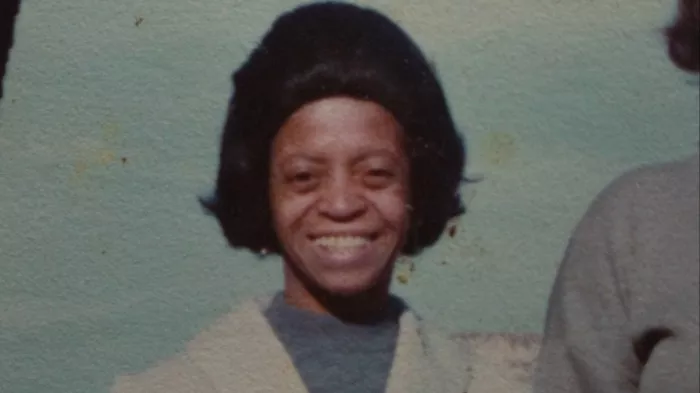
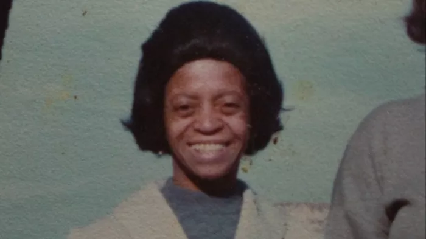
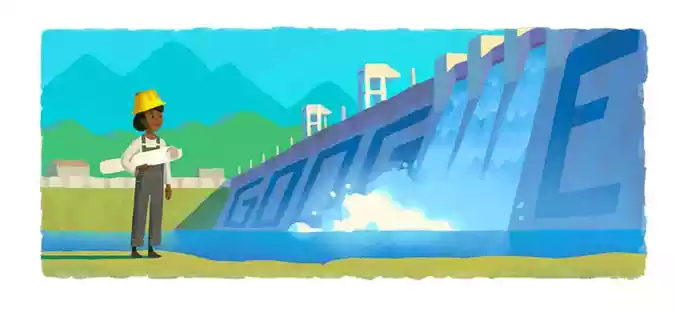

A primeira engenheira negra
Fins da década de 60. Enedina, uma engenheira negra e franzina, chega à obra da Usina Capivari-Cachoeira, e vê o caos da construção. Ela chama seus operários, que não respondem. Indignada, ela então pega o seu revólver e atira várias vezes para o alto. O efeito é imediato. As dezenas de empregados se recompõem e passam a ouvir, silenciosamente, as repreensões de sua chefe.”
Essa poderia ser uma história verdadeira. Embora não se tenha muitos detalhes, é sabido que Enedina Alves Marques, a primeira engenheira negra formada no Brasil, conquistava o respeito de seus subordinados pela sua imposição profissional e, em situações extremas, à bala.
Infância de Enedina
“Enedina Alves Marques nasceu em 13 de janeiro de 1913, em Curitiba, e foi registrada com os sobrenomes do seu pai e da sua mãe. Paulo Marques e Vigília Alves Marques (conhecida como Dona Duca) haviam chegado há três anos na capital, em 1910, e logo se estabeleceram no bairro do Ahu. Não se sabe qual a origem do casal, mas é provável que fossem descendentes de ex-escravizados.
Assim que Enedina nasceu, porém, Virgília se separou de Paulo e passou a morar no bairro Portão. Ela era doméstica e empregada do delegado e militar republicano Domingos Nascimento, cuja casa de madeira ficava na atual Rua Vital Brasil, esquina com a Rápida. Junto de seus filhos (Enedina era a única mulher), ela passava o maior tempo nas dependências de Domingos, mas também fazia trabalhos domésticos e de lavadeira para outras famílias da região.
Nesse ambiente cresceu Enedina Alves Marques. A convivência com a família Nascimento foi essencial na sua vida pessoal e profissional. Desde cedo, junto de sua amiga e filha de Domingos, Isabel (a Bebeca), Enedina teve acesso a um excelente ensino: ela foi alfabetizada na Escola Particular da Professora Luiza, no final da década de 1920, e na sequência ingressou na Escola Normal, onde permaneceu até 1931
Oportunidades
De acordo com Lindamir, a trajetória de Enedina foi possível por causa das oportunidades que ela teve ao longo do caminho e por saber aproveitá-las, com dedicação e inteligência.
“Nascida em Curitiba, fez toda formação em Curitiba, com muita luta e algumas oportunidades. A gente não pode esquecer disso, porque se não, vai cair naquela história da meritocracia: ‘Olha, se esforçando todo mundo consegue’. Não. Ela se esforçou muito, ela tinha capacidade, mas ela teve oportunidade.
Segundo a biografia da engenheira, durante a infância, Enedina ajudava a mãe com o serviço doméstico, na casa do militar Domingos Nascimento, em troca de estudos.
“A primeira oportunidade foi dada pelo patrão da mãe dela que matriculou ela em uma escola, porque se ele não tivesse feito isso, ela não teria como ter essa trajetória tão bacana e tão importante para a sociedade.”
Trajetória
No ano de 1940 inicia sua graduação em Engenharia, na Faculdade de Engenharia da Universidade do Paraná, onde se graduou como Engenheira Civil no ano de 1945.
Em 1946, Enedina foi exonerada da Escola da Linha de Tiro e tornou-se auxiliar de engenharia na Secretaria de Estado de Viação e Obras Públicas do Paraná. No ano seguinte foi deslocada para trabalhar no Departamento Estadual de Águas e Energia Elétrica, após ser descoberta pelo então governador Moisés Lupion.
Nesse período realiza o que para muitos foi seu maior feito como engenheira, a construção da Usina Capivari-Cachoeira. Também trabalha no Plano Hidrelétrico do estado, além de atuar no aproveitamento das águas dos rios Capivari, Cachoeira e Iguaçu.
Sua maior participação foi A Usina Hidrelétrica Governador Pedro Viriato Parigot de Souza localizada no município de Antonina, no Paraná.
Apesar de ser vaidosa em sua vida pessoal, durante a obra na Usina, ficou conhecida por usar macacão e portar uma arma na cintura. Que usava, atirando para o alto sempre quando fosse necessário se fazer respeitada. Enérgica e rigorosa, impunha-se sempre, pois além de ser mulher era negra. Trabalhava em um ambiente majoritariamente ocupado por homens.

Morte
Em 1981, aos 68 anos, Enedina Alves Marques veio a falecer.
Ela foi encontrada em seu apartamento depois de ter tido um infarto. Como ela morava sozinha, o corpo foi encontrado aproximadamente uma semana depois de sua morte.
Na época, um jornal popular retratou a morte de Enedina como a de uma idosa excêntrica e não como a de uma engenheira de importância.
Como resposta, membros do Instituto de Engenharia do Paraná protestaram contra e, após isso, diversos artigos ressaltando os feitos de Enedina foram publicados. Ao longo dos anos que se seguiram seu falecimento, Enedina foi homenageada de diversas formas.
O Prêmio Crea-PR Engenheira Enedina Alves Marques, é organizado pelo Comitê Mulheres do Crea-PR.
O nome é uma homenagem à Engenheira Enedina Alves Marques, primeira mulher formada em Engenharia Civil no Paraná
O Google também não ficou de fora e fez uma bela homenagem ilustrada em seu portal
No Dia Internacional das Mulheres na Engenharia que é comemorado anualmente em 23 de junho e, em 2021, a Maurício de Sousa produções homenageou Enedina Alves